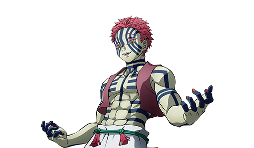
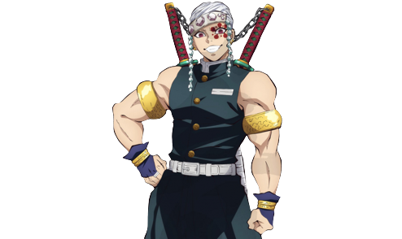
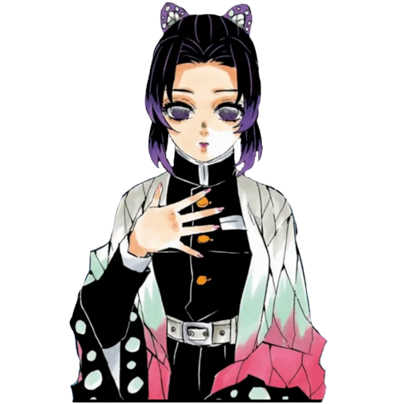

Personagens
# Rank 1
Tanjiro Kamado
Tanjiro é muito gentil por natureza e foi descrito por outros como tendo olhos muito gentis e uma
personalidade compassiva.
# Rank 3

Akaza
A maior reivindicação de fama de Akaza em Demon Slayer é derrotar Kyokuro Rengoku.
# Rank 2

Tengen Uzui
Tengen Uzui incorpora a mistura perfeita de carisma, força e habilidade.
# Rank 6

Shinobu Kocho
Shinobu Kocho também é a irmã mais nova de Kanae Kocho junto com sua irmã adotiva mais nova, Kanao
Tsuyuri.